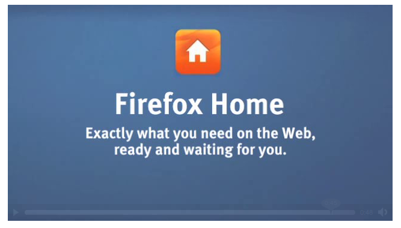

感謝您對「自由軟體鑄造場」的支持與愛護，十多年來「自由軟體鑄造場」受中央研究院支持，並在資訊科學研究所以及資訊科技創新研究中心執行，現已完成階段性的任務。 本網站預計持續維運至 2021年底，網站內容基本上不會再更動。
也紀念我們永遠的朋友 李士傑先生（Shih-Chieh Ilya Li）。
也紀念我們永遠的朋友 李士傑先生（Shih-Chieh Ilya Li）。
Firefox 將不會有 iPhone 版本 – Firefox Home 資料同步取而代之
Created at Monday, 11 October 2010 07:44 Last Updated on Monday, 11 October 2010 17:45
許多 Firefox 的愛好者，常常期待這個廣受好評的開源瀏覽器是否會推出 iPhone 版本，但遺憾的是，Firefox Home 這個權宜之計，大概是 Mozilla 在 iPhone 平台上進行的最大嘗試了。最近一篇 Mozilla 官方部落格的文章（https://blog.mozilla.com/mobile/2010/09/28/firefox-home-looking-to-the-future/），具體說明了 Firefox Home 這個子計畫的內容。
Firefox Home 是 Mozilla 提供的免費服務，使用者只需要在桌面端（Desktop）瀏覽器裝上 Firefox Sync，就可以讓自己 iPhone 上瀏覽器的部份資訊，能夠與桌面端的 Firefox 同步，雖然目前僅提供單向同步化（從桌機的 Firefox 同步資訊到 iPhone），Firefox Home 仍提出了不少讓使用者驚嘆的功能，主要像是記憶密碼、與 iOS4 系統緊密結合，以及可客製化的同步化選項，其他細項包括在 Facebook 以及 Twitter 上與朋友直接分享連結、評論以及發表意見。Firefox Home 也可以讓使用者在類 iPhone 模式下的 iPod Touch 以及 iPad 上運作無礙，但由於不是真正完全的 Firefox 瀏覽器，Firefox Home 會使用 iPhone 預設 Safari 瀏覽器上的排版引擎來呈現書籤頁以及歷史記錄頁。
Mozilla Projects 也會在不久後推出支援 Blackberry 以及 Symbian 版本的 Firefox Home。但 Android 平台上並沒有這樣的規劃，因為 Android平台上已經有手機版的 Firefox 瀏覽器 – Fennec。此篇文章的立論，算是公開駁斥了 iPhone 平台上將會推出 Fennec 瀏覽器的謠言：「雖然說並非完全不可能，但邏輯 上與技術上的限制使得推出 iPhone 版本的全功能 Firefox 瀏覽器困難重重。」該段落的標題很直接了當的說：「iPhone 上不會出現 Firefox」。從 Mozilla 在行動裝置上的發展策略來分析，在 Blackyberry、Symbian 以及 iPhone 上推出 Firefox Home 的服務，一般認為是因為在這些平台上開發 Fennec 有實際上的困難，Mozilla 才會採取 Firefox Home 此種資料同步的替代方案。
相關網址﹕
1. Firefox 不推出iPhone版
https://www.linuxpromagazine.com/Online/News/Firefox-Never-Coming-to-iPhone
2. iPhone 上不會出現 Firefox 瀏覽器
https://www.gizmodo.com.au/2010/09/firefox-browser-will-never-see-the-light-of-day-on-an-iphone/
3. Mozilla: 請死心吧，iPhone 上不會有 Firefox
https://www.computerworld.com/s/article/9188721/Mozilla_Forget_about_Firefox_on_iPhone?taxonomyId=77
You may be interested in the following articles:
- Panasonic 電視將預載 Firefox OS - 2014-01-14
- Firefox 的 Lightbeam 讓您享有免於受網路監控的自由！ - 2013-11-20
- Chrome 與 Firefox 展示不需插件的視訊通話 - 2013-02-18
- Mozilla 正式發布 Firefox OS 開發用手機 - 2013-01-28
- Mozilla B2G 改名為 Firefox OS，將於明年初發售 - 2012-07-09
- Android 版 Firefox 14 正式推出 - 2012-07-06
- Firefox 13 正式版發布 - 2012-06-18
- Mozilla 考慮讓行動版 Firefox 支援 H.264 視頻編解碼器 - 2012-03-22
- Firefox 附加元件 Personas 將改名為 Background Themes - 2012-03-05
- Mozilla 釋出以 Bing 為預設搜尋引擎的 Firefox 版本 - 2011-11-07
- 經理人惹惱 Firefox 企業用戶 Mozilla 部落格發文平息怒火 - 2011-07-04
- 匿名網路瀏覽專案 Tor 計畫推出 Firefox 分支瀏覽器 - 2011-05-18
- Mozilla 拒絕美國政府要求移除 Firefox 附加元件 - 2011-05-11
- Firefox 4 Party 在歡樂慶祝中也能增進使用者新體驗 - 2011-05-05
- 【社群採訪】- 創意十足的 Mozilla Firefox 社群 - Mozilla Taiwan - 2011-03-07
- Mozilla 啟用群眾外包網站診斷 Firefox 的疑難雜症 - 2010-10-22
- Mozilla 釋出 Firefox 行動版本 Fennec Alpha - 2010-09-08
- 一窺 Mozilla Firefox 擴充套件開發 - 2009-04-07
- 行動版 Firefox 瀏覽器 Fennec 釋出有限功能 beta 版本 - 2009-03-26
- Linux 版 Firefox 出現使用者授權合約 引發 Linux 用戶不滿 - 2008-09-18
- 就在本周六，Firefox Party 3.0 - 火狐三 之 橫掃全球創紀錄慶生派對 - 2008-07-07
- Firefox 3 正式版推出 - 2008-06-24
- 下載新火狐 - FireFox 3.0，締造金氏世界紀錄！ - 2008-06-11
- Firefox 行銷模式探討 - 2006-09-01
- Firefox 延伸套件比賽落幕 Firefox 為 Mozilla 賺進百萬美元 - 2006-03-10
- IE 7 beta 版釋出 追趕 Firefox 腳步 - 2005-07-26
- Firefox 下載達 7500 萬 Mozilla 版圖人力同擴張 - 2005-07-19
- Google 擁抱 Firefox 瀏覽器 釋出搜尋工具列 - 2005-07-15
- Firefox 竄上 CNET.com 10 週年慶下載軟體排行 - 2005-07-12
- 安全漏洞惹禍 Firefox 市佔率下滑？ - 2005-07-12
- Firefox FUD 浮出檯面？ - 2005-01-25
- Google 擴大徵才 Firefox 首席工程師榜上有名 - 2005-01-21
- Firefox 1.0 中文版發表記者會 - 2004-11-20
- Firefox 1.0 推廣週 11/15-11/20 - 2004-11-05
- Firefox 下載數突破 100 萬 核心開發者接受訪談 - 2004-09-21
Special


Open Source Software Foundry‧ Best Viewed with IE7.0 or Firefox2.0 above, 1024x768 Resolution. E-Mail：contact@openfoundry.org
Address：No.128, Sec.2, Academia Rd., Institute of Information Science, Academia Sinica, Nangang District, Taipei City 11529, Taiwan (R.O.C).
Privacy Policy. Terms-of-use
Address：No.128, Sec.2, Academia Rd., Institute of Information Science, Academia Sinica, Nangang District, Taipei City 11529, Taiwan (R.O.C).
Privacy Policy. Terms-of-use